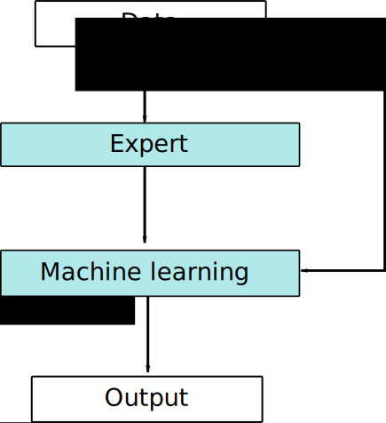
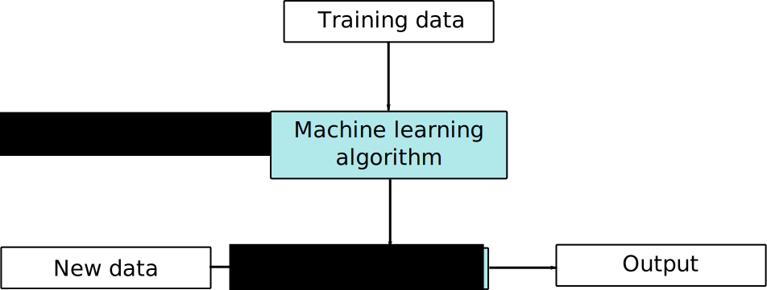
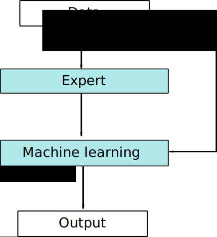

or "The power of adjoints"
9th May 2017
Simon W Funke
Simula Research Laboratory
+ Model based simulation
= Awesome?
 |
 |
|  |

Training step
Find the optimal solution $m^*$ of:
Prediction step
9th May 2017
Simon W Funke
Simula Research Laboratory
|
|
|  |